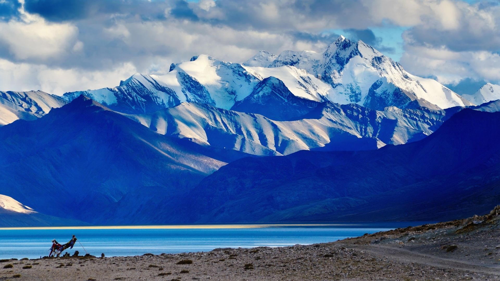
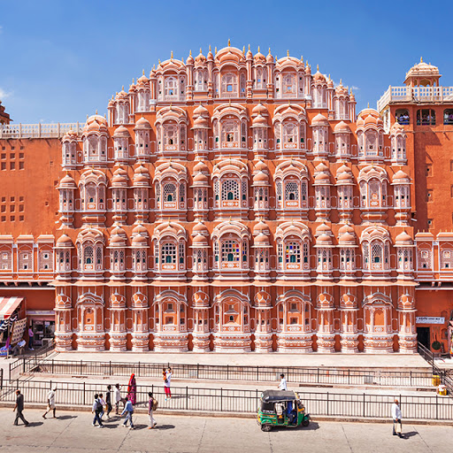

| Destination | Details |
|---|
Statue Of Unity  | The Statue of Unity is a statue of Indian statesman and independence activist Vallabhbhai Patel (1875–1950), who was the first deputy prime minister and home minister of independent India and an adherent of Mahatma Gandhi. |
Taj Mahal  | The Taj Mahal (/ˌtɑːdʒ məˈhɑːl, ˌtɑːʒ-/;[4] lit. 'Crown of the Palace', [taːdʒ ˈmɛːɦ(ə)l]),[5] is an ivory-white marble mausoleum on the right bank of the river Yamuna in the Indian city of Agra. |
| Ladakh  | Ladakh is a region administered by India as a union territory, and constitutes a part of the larger Kashmir region, which has been the subject of dispute between India, Pakistan, and China since 1947. |
Jaisalmer  | Jaisalmer nicknamed "The Golden city", is a city in the Indian state of Rajasthan, located 575 kilometres (357 mi) west of the state capital Jaipur. The town stands on a ridge of yellowish sandstone and is crowned by the ancient Jaisalmer Fort. |
| Jaipur  | jaipur is the capital and largest city of the Indian state of Rajasthan. As of 2011, the city had a population of 3.1 million, making it the tenth most populous city in the country. Jaipur is also known as the Pink City. |
Kerala  | keralais a state on the Malabar Coast of India.[13] It was formed on 1 November 1956, following the passage of the States Reorganisation Act, by combining Malayalam-speaking regions of the erstwhile regions of Cochin, Malabar, South Canara, and Travancore. |